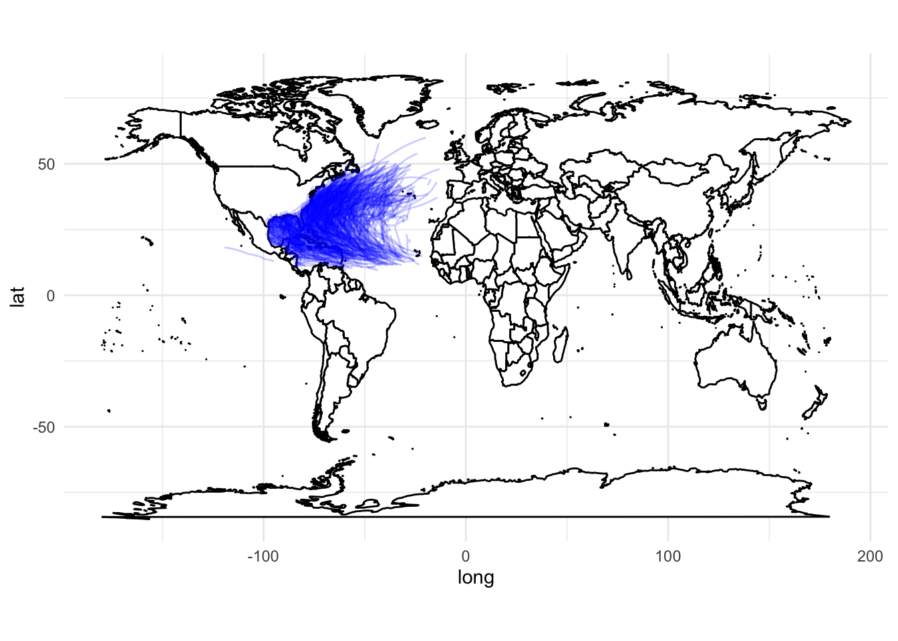

Knowing the impact that certain storm types, particularly Hurricanes have on our economies, we are interested in leveraging visualizations to better understand them. By creating a varied range of plots, we will be able to study both the categorical and numerical variables present in our collection of data.
The first thing we were keen to observe was the trends in storm incidence over the years. These include hurricanes, tropical storms, as well as other type of climatological phenomena. The first plot shown below presents the upward incidence of storms. This positive trend is due to two main factors. Firstly, the increment in data being recorded. Furthermore, a noticeable increase in tropical storm frequency since the 19th century.
Code
df =read.csv("Data/hurricanes.csv")df$Year <-as.integer(format(as.Date(as.character(df$DATE), "%Y%m%d"), "%Y"))# Count the number of hurricanes per yearhurricanes_per_year <-aggregate(HID ~ Year, data = df, function(x) length(unique(x)))# Create a scatter plot with a trend lineggplot(hurricanes_per_year, aes(x = Year, y = HID)) +geom_point() +# Scatter plotgeom_smooth(method ="lm", se =FALSE, color ="blue") +# Linear trend linescale_x_continuous(breaks =seq(1850, 2020, by =10)) +labs(title ="Hurricane Frequency Over Time",x ="Year",y ="Number of Hurricanes") +theme_minimal()
`geom_smooth()` using formula = 'y ~ x'
Using the maps package, we have been able to visualize the trajectories of each storm. All of them follow a typical concave path that curves inward toward land.
Code
df <- df[df$LATITUDE !=-999& df$LONGITUDE !=-999, ]# Filter to include only hurricanes. Adjust the condition based on how hurricanes are indicated in your 'STATUS' column.df_hurricanes <- df[df$STATUS =='HU', ]# Create a base mapworld_map <-map_data("world")gg <-ggplot() +geom_polygon(data = world_map, aes(x = long, y = lat, group = group), fill ="white", color ="black") +coord_fixed(1.3) +theme_minimal()# Add paths of only hurricanesgg +geom_path(data = df_hurricanes, aes(x = LONGITUDE, y = LATITUDE, group = HID), color ="blue", alpha =0.2)

Knowing the typical trajectory of tropical storms, we wanted to study the typical time frame in which they occur. Without surprise we found that September is the month in which tropical storms are most common (followed by August and October).
Code
# Assuming your data frame is named 'df' and it has a 'DATE' column in 'YYYYMMDD' formatdf =read.csv("Data/hurricanes.csv")# Attempt to convert the 'DATE' column to a Date type and handle potential conversion errorsdf$Date <-as.Date(as.character(df$DATE), "%Y%m%d")# Remove rows where Date conversion was not successful (NA)df <- df[!is.na(df$Date), ]# Extract the month from the 'Date' columndf$Month <-as.integer(format(df$Date, "%m"))# Count the number of hurricanes per monthhurricanes_per_month <-table(df$Month)# Convert the table to a data frame for plottinghurricanes_per_month_df <-data.frame(Month =as.numeric(names(hurricanes_per_month)), Frequency =as.integer(hurricanes_per_month))# Create a bar chartggplot(hurricanes_per_month_df, aes(x = Month, y = Frequency)) +geom_bar(stat ="identity", fill ="blue") +# Bar chartscale_x_continuous(breaks =1:12, labels =c("Jan", "Feb", "Mar", "Apr", "May", "Jun", "Jul", "Aug", "Sep", "Oct", "Nov", "Dec")) +labs(title ="Hurricane Frequency by Month",x ="Month",y ="Number of Hurricanes") +theme_minimal()
Previously, all storms have been referred to as tropical storms. However, we know these are further categorized depending on several characteristics such as wind speed and pressure. Below is a pie chart that depicts how re-incident each storm type is. In a leading position, we find tropical storms (TS), followed by hurricanes (HU).
Code
status_counts <-table(df$STATUS)# Convert the table to a data frame for plottingstatus_counts_df <-as.data.frame(status_counts)names(status_counts_df) <-c("Status", "Frequency")# Create a pie chartggplot(status_counts_df, aes(x ="", y = Frequency, fill = Status)) +geom_bar(width =1, stat ="identity") +coord_polar("y") +# Converts the bar chart to a pie charttheme_void() +# Removes the axes and labelslabs(fill ="Status") +scale_fill_brewer(palette ="Set3")
Code
library(dplyr)df$Year <-as.integer(format(as.Date(as.character(df$DATE), "%Y%m%d"), "%Y"))# Count the number of 'HU' storms per yearhu_per_year <- df %>%filter(STATUS =="HU") %>%group_by(Year) %>%summarize(HU_Count =n())# Count the total number of storms per yeartotal_per_year <- df %>%group_by(Year) %>%summarise(Total_Count =n())# Join the two datasets and calculate the ratioyearly_data <-merge(total_per_year, hu_per_year, by ="Year")yearly_data$Ratio = yearly_data$HU_Count / yearly_data$Total_Count# Create a time series plot of the ratioggplot(yearly_data, aes(x = Year, y = Ratio)) +geom_line() +geom_point() +labs(title ="Yearly Ratio of 'HU' Storms to Total Storms",x ="Year",y ="Ratio of 'HU' to Total Storms") +theme_minimal()
Code
# Filter out invalid latitude and longitude values if necessarydf <- df[df$LATITUDE !=-999& df$LONGITUDE !=-999, ]# Filter to include only hurricaneshurricanes_df <- df[df$STATUS =='HU', ]# Assuming hurricanes mainly occur in a certain range, adjust these values based on your datalat_range <-range(hurricanes_df$LATITUDE, na.rm =TRUE)lon_range <-range(hurricanes_df$LONGITUDE, na.rm =TRUE)# Create a base mapworld_map <-map_data("world")gg <-ggplot() +geom_polygon(data = world_map, aes(x = long, y = lat, group = group), fill ="white", color ="black") +coord_fixed(1.3) +theme_minimal()# Add a heatmap layergg +geom_density_2d_filled(data = hurricanes_df, aes(x = LONGITUDE, y = LATITUDE), alpha =0.5, size =0.3) +xlim(lon_range[1], lon_range[2]) +# Set x-axis limitsylim(lat_range[1], lat_range[2]) # Set y-axis limits
Code
hurricanes_df <- hurricanes_df[hurricanes_df$LATITUDE !=-999& hurricanes_df$LONGITUDE !=-999, ]# Create a base map using the 'world' database, which provides a simple world mapworld_map <-map_data("world")# Plot the world mapgg <-ggplot(data = world_map, aes(x = long, y = lat)) +geom_polygon(aes(group = group), fill ="white", color ="black") +# Corrected herecoord_fixed(1.3) +# Keep aspect ratio of the maptheme_minimal()# Add a heatmap layer for hurricanes datagg +geom_density_2d_filled(data = hurricanes_df, aes(x = LONGITUDE, y = LATITUDE), alpha =0.5) +xlim(min(hurricanes_df$LONGITUDE), max(hurricanes_df$LONGITUDE)) +# Set x-axis limitsylim(min(hurricanes_df$LATITUDE), max(hurricanes_df$LATITUDE))
Having analyzed the whole spectrum of storms we will now focus our study on the two types which are both the most prominent and most impactful; Hurricanes and Tropical Storms. Narrowing our spectrum of study will let us understand their behavioral patterns as well as their differences. Using box plots we can see how, while wind speed in Hurricanes is stronger than in Tropical Storms, the pressure in the former is lower than in the latter.
Code
# Boxplot to compare the windspeed and pressure of hurricanes vs tropical storms# 1 Boxplot of wind speed according to storm typeggplot(hurricanes2, aes(x = hurricanes2$STATUS , y = hurricanes2$WINDSPEED_KT )) +geom_boxplot() +ggtitle("Boxplot of Wind Speed (KT) according to Storm Type") +labs(y ="WindSpeed", x ="Storm Type")
Code
# what if we look at the values of pressure that are not -999 (which I think it was not measured correctly)hurricanes2 <-subset(hurricanes2, PRESURE_MB !=-999)ggplot(hurricanes2, aes(x = hurricanes2$STATUS , y = hurricanes2$PRESURE_MB )) +geom_boxplot() +ggtitle("Boxplot of Pressure according to Storm Type") +labs(y ="Pressure", x ="Storm Type")
So what has been the highest mean wind speed recorded in a Hurricane? and which Hurricane was this? Turns out Hurricane Hattie was the most notable in terms of wind speed. This Hurricane had a mean wind speed of 115 KT. It hit the coastal regions of Honduras and Guatemala in 1961 with an estimated monetary damage of around $60 million. Additionally, there were 319 fatalities.
Code
# what are the storms with the highest mean windspeed??# Group by HNAME and calculate mean windspeedmean_windspeed_by_hurricane <- hurricanes2 %>%group_by(HNAME) %>%summarise(mean_windspeed =mean(WINDSPEED_KT, na.rm =TRUE))# Select the top 100 hurricanes based on mean windspeedtop_25_hurricanes <- mean_windspeed_by_hurricane %>%top_n(25, mean_windspeed)# Create the plot for the top 100 hurricanesggplot(top_25_hurricanes, aes(x = mean_windspeed, y =fct_reorder(HNAME, mean_windspeed))) +geom_point(color ="blue") +ggtitle("Top 25 Hurricanes by Mean Wind Speed") +ylab("") +theme_linedraw()
Code
# Hattie has the top mean windspeed. We will further study this hurricane
Code
# what is the typical pattern of a hurricaine?# Let us look at ALLEN (highest windspeed)hattie <-subset(hurricanes2, HNAME ==' HATTIE')# World map dataworld_map <-map_data("world")# Plotting the world map with points for Hurricane Hattieggplot() +geom_map(data = world_map, map = world_map,aes(x = long, y = lat, map_id = region),fill ="white", color ="black", size =0.25) +geom_point(data = hattie, aes(x = LONGITUDE, y = LATITUDE),color ="red", size =3) +labs(title ="Map of Hurricane Hattie Location") +theme_minimal()
Code
lat_limits <-range(hattie$LATITUDE)lon_limits <-range(hattie$LONGITUDE)# Plotting the map centered around Hurricane Hattieggplot() +geom_map(data = world_map, map = world_map,aes(x = long, y = lat, map_id = region),fill ="white", color ="black", size =0.25) +geom_point(data = hattie, aes(x = LONGITUDE, y = LATITUDE),color ="red", size =3) +coord_cartesian(xlim =c(lon_limits[1] -10, lon_limits[2] +10),ylim =c(lat_limits[1] -10, lat_limits[2] +10)) +labs(title ="Map Centered around Hurricane Hattie Location") +theme_minimal()